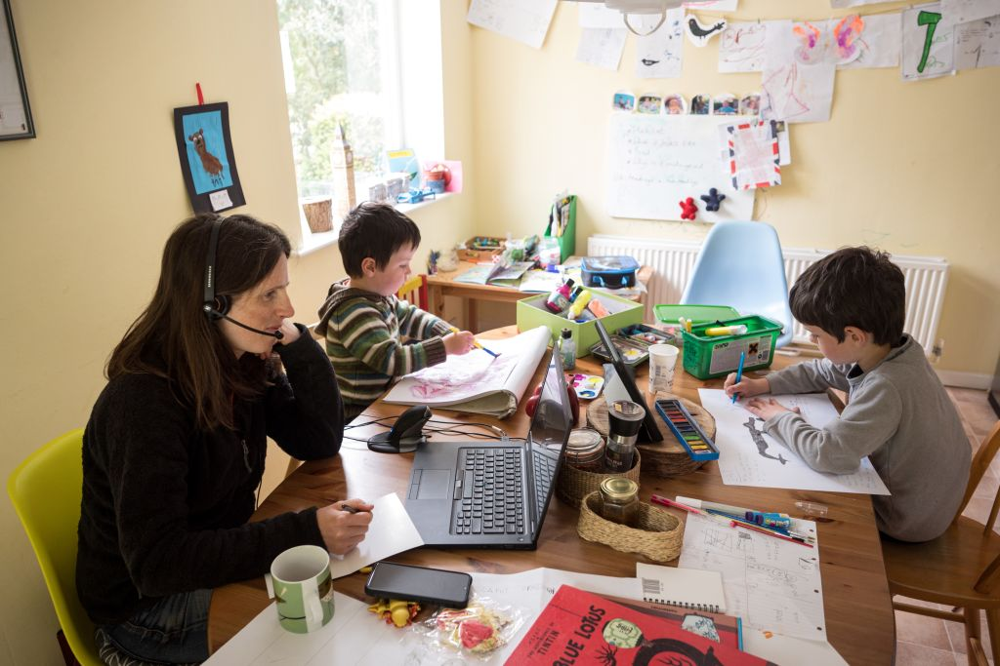
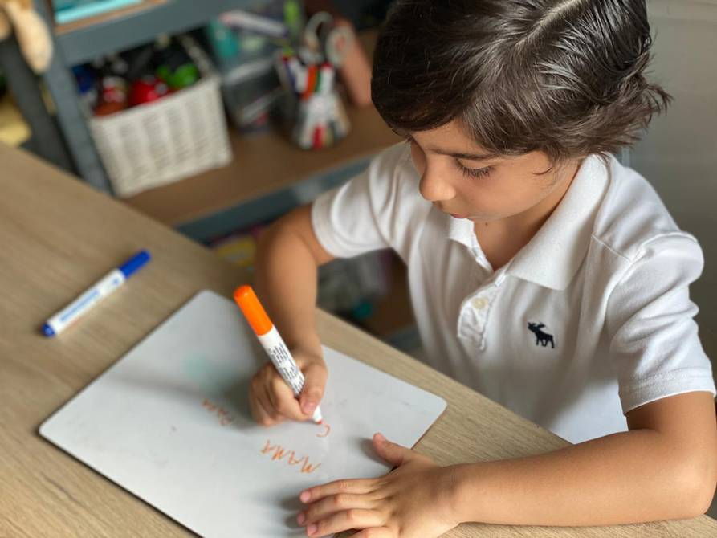

Las familias son una pieza importante en la comunidad educativa, pero para que la participación
sea posible es necesario que ellas realmente quieran intervenir en el proyecto educativo, en las
actividades, en las diferentes propuestas que puedan surgir. Un punto importante es la motivación
que impulsará a la participación. Y para que haya motivación las propuestas deben surgir de un interés
común, de una necesidad real o de una actividad atractiva para todos.
Un elemento importante dentro de la motivación es que las familias sepan cómo y cuándo participarán.
Para ello es necesario información, comunicación y formación.

El primero de ellos es la familia, lugar donde se lleva a cabo el aprendizaje de las funciones básicas,
como hablar y comer, además de aprender los valores y las normas de conducta que guiarán su futuro.
El segundo es la escuela. En ella “salen” al mundo privado donde conviven con sus pares y adultos, asimilando
conocimientos nuevos que les permiten ser tolerantes a la “diferencia”. Sin embargo, estos dos elementos
que inician su formación no deben actuar por separado, sino que los mejores resultados se logran cuando la
familia y la escuela trabajan estrechamente por la educación de los niños y niñas.
A continuación, explicamos los principales beneficios de aumentar las funciones de la familia en la educación
escolar.
1. Se potencia la educación del niño
de manera efectiva si se sienten apoyados tanto en su establecimiento educativo como en su hogar. Si los infantes
perciben un interés para identificar sus dudas e ideas en el hogar, se dan con mayor facilidad al aprendizaje,
tienen más ánimo para participar en clases y actividades extracurriculares.

2. Se mejora su aspecto emocional
una educación emocional, principalmente, de sus padres. Desde la familia, como punto de partida, se le enseña al
menor a encarar las emociones vividas a diario, como la ira, la alegría, la frustración y el amor. Estos aprendizajes,
una vez asimilados, se practican en situaciones externas como el colegio.
3. El niño aprenderá valores con mayor facilidad
estos se refuerzan y se practican para que logren mantenerse en el largo plazo. Por eso, la unión entre el
establecimiento educativo y la familia es prioritario para el aprendizaje valórico.
Por ejemplo, si el estudiante concibe vivir en sociedad ejerciendo cualidades como la generosidad, la honestidad,
el respeto y la responsabilidad es porque en su hogar y en su colegio son elementos activos de la convivencia
diaria.
